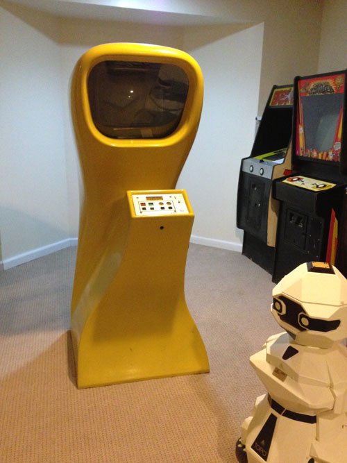

Computer Space

Nolan Bushnell and Ted Dabney's version of the popular computer game Spacewar!
Computer Space started on the day Nolan came into the office at AMPEX where he was employed, having moved into Ted Dabney's office that he was now sharing with Nolan. On this day Nolan asked Ted how vertical and horizontal worked on a TV. Ted explained how it worked and then Nolan asked Ted an interesting question, could he put a spot, a tiny dot on a TV screen and a circuit to move that spot up and down as well as left and right... Ted said sure, it could be done and he went home at the end of the day to start setting up a workshop in his home where he would design this new technology called the Spot Motion Circuit. As work progressed, in the evenings Ted would work on this design and Nolan would come over to his home to see how things were progressing. Meanwhile a curious pair of watchful eye's peaked in from time to time wanting to see what was going on. Ted's daughter Terri would be witness to her dad's creation of this technology using all sorts of little objects and using little black items like looked like insects... IC chips. Finally the circuit was ready, a spot was now displaying on the screen and with a horizon and vertical sync controller, the dot could be moved around the screen, the spot now had motion. Nolan saw this and his eyes lit up and his creative juices became to flow... excited, he now saw the potential for a whole new future - video games! Unlike Nolan's previous idea of taking an expensive mini-computer and running a Spacewar! game on it, this new circuit could be the foundation for a very inexpensive dedicated system to play a Spacewar! type game on a TV set, Nolan now started to describe to Ted what he wanted him to do next... Ted would move his daughter out of her bedroom and turn her room into his new workshop to expand and build a full blown video game from this circuit that so far, had done nothing more than put a little dot on the screen and could move it around. As Ted finished circuits and designs for this new game, Nolan would take his notes, make schematics and then went and enlisted a junior engineer at Ampex by the name of Steve Bristow to do the PC Board layout design of the boards needed to make these circuits into something producable.
|